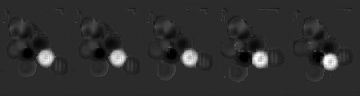

https://docs.qq.com/sheet/DZUlqR0xGdGRqa2R5?tab=saz2xo
解耦合的时空 mamba 网络用于人体姿态估计
把 Mamba 用于视频姿态估计感觉可以做：
-
表征学习：shared mamba block → 增强每帧的空间表达 + sequence mamba block → 增强时序表示
-
初始的 heatmap / 坐标， 可以想下怎么用
空间序列+时间序列
每一帧先做高分辨率增强；
然后可以进行 pooling，拿出有用的信息，做时序建模 （这里感觉可以多尺度，pixel + patch ）
，目前可以做一个 baseline HRNet+SpaceMamba + 时序 Mamba
空间 Mamba 可以用多尺度Concat建模
*编译 Mamba 出错了
Mamba 编译踩坑：
主要是版本得符合，版本对应直接就可以 用 torch2.0 + cuda11.7 这两个版本对应可以直接安装 Mamba
V1 空间先用 Mamba 增强；
- 时间上分为两块，一块是把多帧拼成一张大图，直接让模型去学习 （交叉着可行变卷积）；一块是通道拼接，做交互； 训练不稳定
V2 版本去掉 DCNV2
初步效果 V1 V2 效果很类似，不相上下，已经很不错，相比 CNN，提高了 1 个点。
但是效果依然还是远远不够的，需要思考进一步怎么去提点。
感觉下一步可以把特征对齐给加上— 但是特征对齐大概率应该是没啥用的，因为用 mamba 扫描的过程中已经考虑了全局信息—也不一定，我先试试用DCN 去做对齐然后在聚合，相当于改了一下 head
 这个是 v2 版本的特征图，能看出来 mamba 模型不能实现很好的对应，所以可以加上可形变对齐的那个试试。也就是说存在对齐问题
继续跑下 V3 V4 —
V3：V2+可形变对齐聚合
V4：三向时序融合建模 + 可形变对齐聚合
v3 v4 均无效
在 v3 基础上加互信息试试— deformable align 其实没用 所以可以在 v2 基础上加互信息
之前的工作已经证明高分辨率表征学习很重要对于准确的姿态热图。
然而，学习高分辨率时序建模是非常具有挑战性的。transformer
为了将成功的经验迁移到视频中，大量的工作已经做出了努力。
在时序姿态估计中，学习高分辨率时序建模是有挑战的。
- 全维度（向）高分辨率全局时序建模策略。显式直接建模全序列的动态在横向、纵向以及深度方向。学习 semantic 以及 detail 的动态信息。— 全局高分辨率时序建模
- 局部序列节别时空可形变管道注意力，自适应学习局部信息 — 局部时空调优聚合 故事可以按照上面的来讲。
- *发现互信息不 work，训练一直 NAN
- 加上 SE Attention 分层融合之类的，都没啥用 所以重点就还是 mamba 故事怎么讲
- *所以只能走 B 计划，换 Backbone
- 无压力建模高分辨率视频序列
加一些设计，比如说*多尺度序列建模
直接用 Transformer Backbone 然后把分辨率上采样两倍，然后用 Mamba 建模时序看看效果。 读一下综述和论文找找灵感 现在还缺一个引子
- 实验上看到一篇 VIT-B 直接可以到86.2 的精度，所以感觉应该先试试去 train 一下 ViT-B，但是不知道他 bounding box 用的是啥 === VIT-B 训练了 50 epoch 效果很差，换了 box 效果依然很差，得 debug 看看是什么问题。不知道是不是 sigma 的问题 感觉是 batch 太大，更新少了好几倍的关系 — 试试 train 150epoch — 再试试小batch 训练方案 —
- ViT-B 72.3 ｜ 50epoch 80.2｜大 batch 我试试 150 / 100 epoch
- 正在测 TDMI 看看有没有问题（没问题）。待会儿也去测一下Vit-H（没问题），以前训练好的模型拿来测测看看效果咋样，确保代码啥的没问题（没问题）。然后测试一下 ViT-B 原本模型的效果（72.6），最后再去调整 ViTB 的训练。调整思路感觉就是改一下 SIGMA，学习率，weight decay 之类的
MambaPoseV7 版本
- 时空 mamba（空间调制（逐帧过滤重要信息）+全向时序建模（全局动态捕获+语义整合））写论文重点就是高分辨率全向序列建模
- 局部时空优化-自适应采样局部信息进行优化细节
V7精度 83.5，退化了；首先是 SIGMA=3 效果更好，所以后续实验都用 SIGMA=3
分析精度退化的问题，我觉得可以改进一下，试试两个版本的实验：
- 低分辨率（16 * 12）直接Mamba做序列建模，然后直接用当前帧信息 84.8 加上时间编码 84.6
- 低分辨率序列建模+可形变融合 84.4 很奇怪的一点是多帧融合之后效果会退化,我感觉就是 backbone 的特征表达能力被破坏了 待会儿也试试加上时间编码看看 还有一种可能就是 Backbone 的特征不应该上采样去用，而应该跟 HRNet一样，吧 final layer 之前的特征拿来，可能会更好。这一点等第一个实验结果出来之后看看。所以可以先尝试在低分辨率上加入时间编码
- 低分辨率（16 * 12）来自 Backbone + 高分辨率（64 * 48） 来自 keypoint-head 的双分辨率序列建模 84.8 三个版本挂上了，同时把 weight_decay调整到了 0.01
- 统一的精度提高，说明横向 cat 的mamba 结果不应该和通道 cat 的直接加；或者就是 weightdecay 的影响
- 给输入特征加上时间编码，低分辨率做一组实验，单纯高分辨率也做一组实验
- 低分辨率 （current frame）+ 时间编码 84.5
- 高分辨率+时间编码 + 用当前帧 85.4（有希望能调上去 说明后面还是得高分辨率特征,确实很有希望）
- 高分辨率+时间编码+可形变局部优化融合 85.2
感觉下一步可以试试， 低分辨率+高分辨率特征融合，不过都用当前帧特征，可以把两个特征融合完用一个 SEAttention；然后这两个版本实验都把 encodeing 去掉
- 高分辨率当前帧+SE 85.3 说明 SEAttention 没啥用，不如时间编码
- 低分辨率+高分辨 85.0 —⇒ 新版本低分辨率+高分辨率 85.3
- 高分辨率动态+语义 先进行语义建模，再进行动态建模，以及局部融合85.1
- 高分辨率 全局动态和语义并行建模并融合，+ 局部可行变融合 85.4
下一步需要开发出一个不退化的融合方案：感觉可以多帧融合，加到当前帧特征上去 对，把局部对齐加进去，多帧融合；
- 只用高分辨率多帧融合 两种高-低分辨率融合方案：
- 把低分辨率上采样，和高分辨率融合
- 构造一个特征金字塔，低分辨率上采样 高分辨率下采样 但是这种感觉有点问题 就是 语义和最终的融合问题
目前实验总结：
目前一直没超过 backbone 比较伤感。应该是特征的损耗。对于 Transformer 提取的特征来说，全局特征感觉是够的，就是局部特征有点奇怪。
- 只用高分辨率，全局融合，有 85.4 的精度 （目前最高）
- 高分辨率下，全局 mamba + 局部的可行变融合，会掉点。既然是为了凑创新点，那这个模块得想想其他方法，不能简单的一个可形变
- 目前高分辨率+低分辨率，带局部融合， 85.3
- 在比较高的精度中，都是当前帧特征发挥的比较好。所以这么看，不如调整一下局部融合的方法，根据 Mamba 建模的全局动态,感觉每一帧是不是应该单独处理，然后用 mamba 吸收全局动态 ----- 五帧像素 每个都关注全序列信息，需要进一步做局部增强 等出了结果在改代码把
- GMLP 高了 0.1， 85.5 --- 我觉得回头可以试试用 ViT-L
- 加时间编码掉了 0.2 85.3
这个工作我想想，我觉得需要做的比较完善才可以：
- HRNet 和 ViT作为 baseline，我觉得都需要，可以更好的展示我们方法的效果。也就是 baseline，baseline+全局 mamba，baseline+全局 mamba+局部优化
- 关于高分辨率，可以是先用低分辨率建模，然后对比引入高分辨率的效果，这块就用 ViT 作为 baseline 去比较
- 低分辨率：baseline+CNN 聚合 ｜ baseline+transformer 操作 ｜ baseline + mamba
- 高分辨率：baseline +CNN 聚合
我发现在这里记录不太好，看不太清楚，我在网页进行进度记录。
Mamba 在 HRNet 作为 Backbone 时，效果不好 在 No-Pretrain 的 HRNet 作为 backbone 时训练有问题的版本是 82 也是比较低
已经取得 SOTA 结果。
- 看了最新的 VideoMamba论文，不影响我们发挥，他们都是 1/16 的特征分辨率，我们可以实现 1/4，所以优势很大；
- 扫描方向不一样
- 整体设计贡献不一样
- 也就是说不影响现在的工作。最重要的是领域不一样